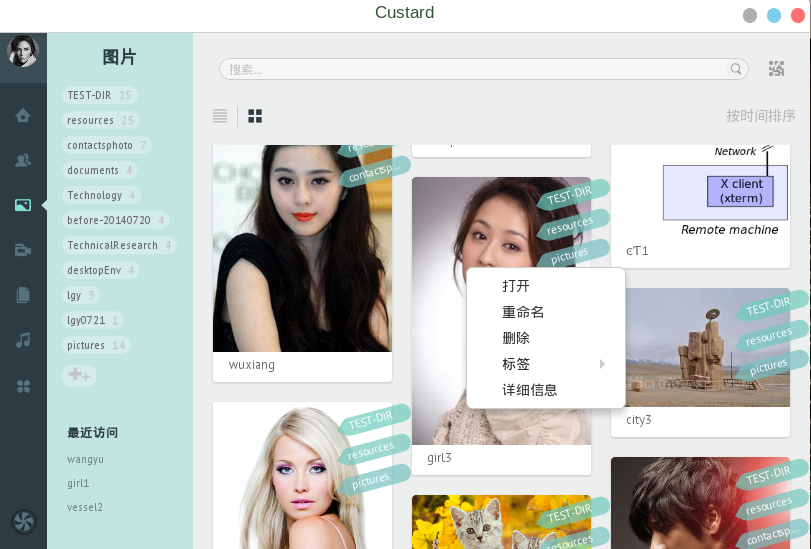
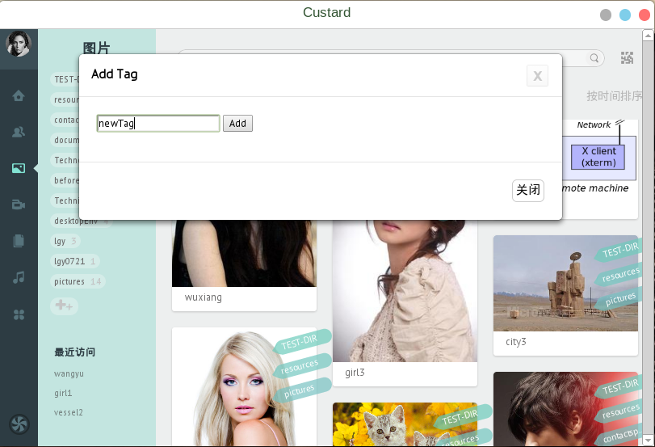
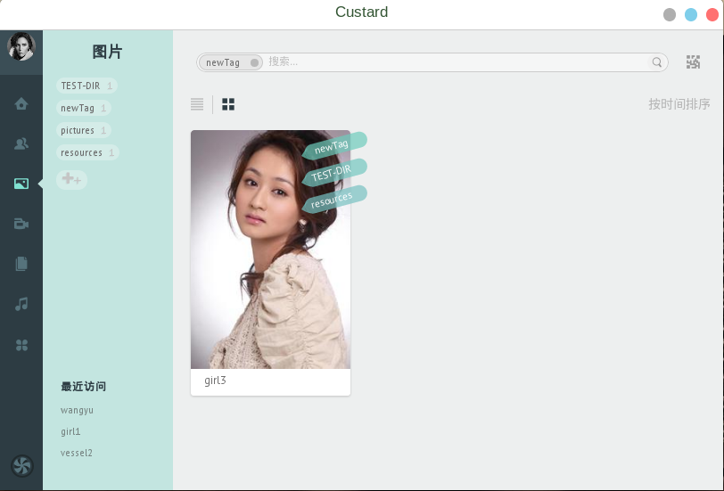
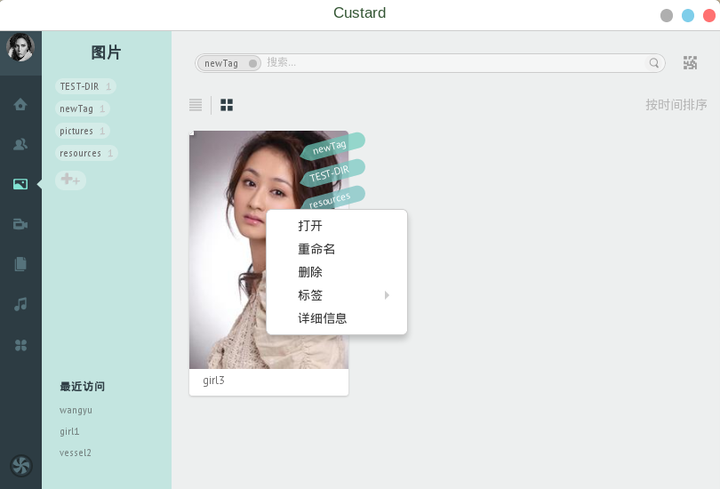
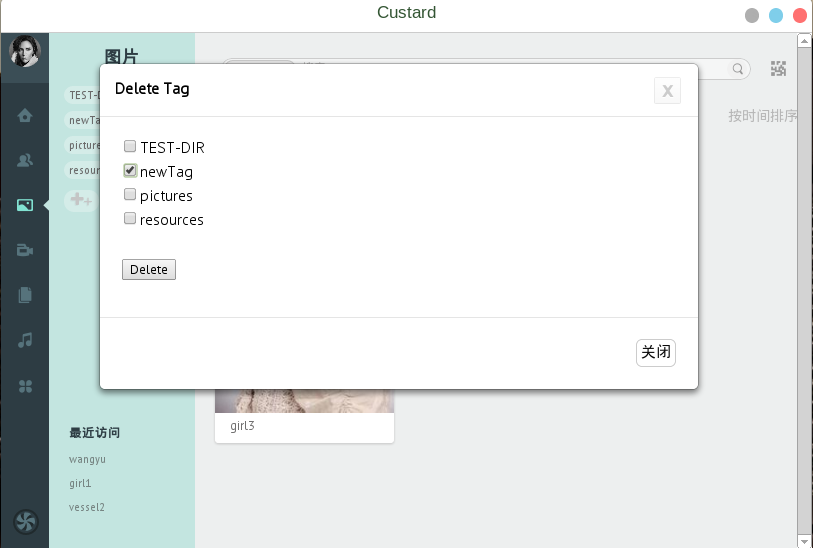

数据管理器提供了独有的“标签式管理”概念，用户可以在数据上自由的添加“标签”，比如“某次聚会”上，用户拍摄了相关的视频和图片，在用户录入数据管理器时，可以将这些数据打上“某次聚会”标签，日后用户想寻找这些数据时，只需要搜索该次聚会的标签即可，这样可以极大的方便用户管理自己的数据，而不用担心放到某一文件夹下，时间长了忘记存储位置的尴尬。
下面举例展示数据的标签操作，我们在某个图片文件下点击邮件，选择标签：
添加新标签，命名为“newTag”，然后点击Add按钮：
添加成功后，在数据管理器左侧的标签栏即可显示出新添加的newTag标签，单击该标签，即可显示出属于所有打了该标签的数据文件：
当用户想删除某类数据的某类标签时，可以在该数据上点击右键，标签，删除标签，勾选需要删除的标签，然后点击Delete按钮即可。
 